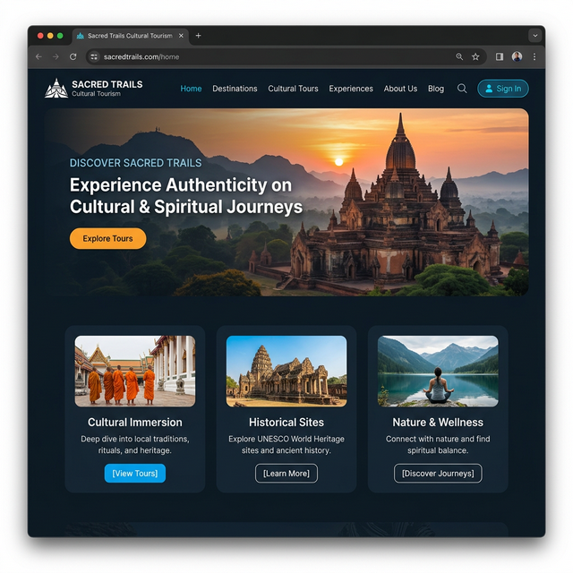
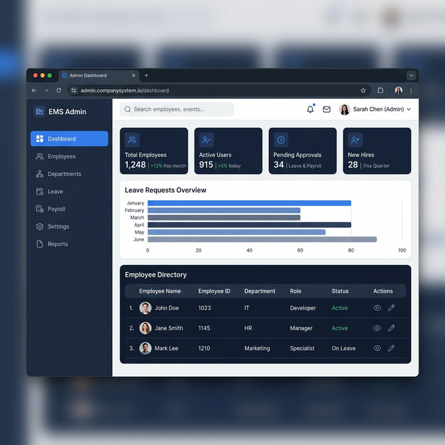
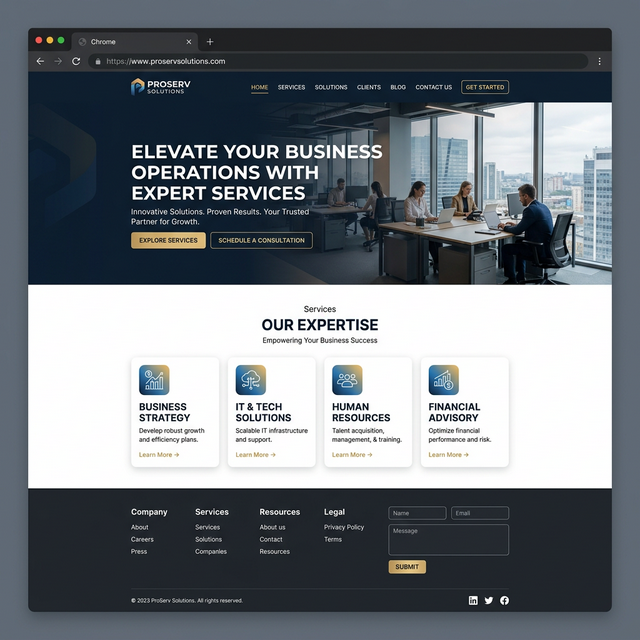

Web Developer |
WordPress Learner
Building responsive, dynamic, and clean websites with strong fundamentals in frontend UI and Python Django backends.
const developer = {
name: 'Nithishkumar K',
role: 'Web & WordPress Developer',
location: 'Chennai, India',
focus: [
'Theme Customization',
'Responsive UI',
'Client Delivery'
],
executeWork() {
return this.focus.map(task => \`Delivering \${task}\`);
}
};
console.log(developer.executeWork());
// Ready to join your team.About Me
Entry-level Web Developer focusing on foundational full-stack skills and robust CMS development.
Hi, I'm Nithishkumar K.
I'm a passionate web developer with practical internship experience in full-stack web development. I focus on building robust Python Django backends, database-driven applications (MySQL), and crafting clean, responsive user interfaces.
Currently, I am expanding my expertise by diving deep into WordPress basics, exploring custom theme development, and mastering page builder workflows to deliver high-quality, practical websites for real-world clients.
Real-Time Work Simulations
Practical execution and problem-solving workflows simulating day-to-day developer tasks in an IT services environment.
Tourism Platform Module
Approach
- Integrated dynamic tour data rendering
- Setup secure login authentication flow
- Connected Django backend with MySQL DB
Outcome
Successfully simulated full-stack integration and dynamic data display.
Admin Dashboard UI
Approach
- Structured CSS Grid for dashboard layout
- Optimized table data presentation
- Ensured sidebar navigation responsiveness
Outcome
Delivered an intuitive, easy-to-use internal data visualization interface.
WP Layout Customization
Approach
- Leveraged visual page builders (Elementor)
- Customized standard theme header/footer structures
- Optimized layout breakpoints for mobile
Outcome
Grasped efficient CMS layout workflows for rapid client delivery.
Internship & Journey
My professional development and hands-on learning curve in web technologies.
Tourism Management Platform Simulation
Full-Stack Modules Simulation (Internship)Developed core backend and frontend modules for a simulated tourism platform to understand full application lifecycles.
- Designed and integrated secure login authentication flow
- Built interactive admin dashboards for tour bookings
- Established robust database connectivity for dynamic data rendering
Learning Journey
Data & Backend Basics
Learned fundamental Python concepts, Django routing logic, and database management principles using MySQL.
Internship Experience Phase
Applied core concepts to build practical full-stack web applications, focusing on simulated UI dashboarding and module integrations.
WordPress Journey Commences
Started diving into CMS frameworks, exploring WordPress themes, plugins, and page builders.
Real-World Application Phase
Currently building this portfolio and deploying simulated real-world client projects to solidify learning and demonstrate practical capability.
Project Showcase
Practical projects and module simulations displaying full-stack capabilities.

Sacred Trails Cultural Tourism
Dynamic concept platform managing tourism locations. Focused on robust backend integration for location data rendering and responsive UI modules.

Employee Management System
Internal administration dashboard designed to manage employee records securely. Features clean tabular data layouts and easy navigation systems.

WordPress Practice Website
A demo service company website demonstrating practical, hands-on WordPress customization skills, page builder familiarity, and responsive layout scaling.
Technical Expertise
Core competencies focused on frontend web development and CMS management.
Frontend / Web Basics
Backend & Database
WordPress Fundamentals
Continuous Learning & Growth
"The best developers aren't those who know everything, but those who can learn anything."
As an entry-level professional, my greatest asset is my adaptability. I thrive in simulated environments that mirror real client demands, whether it's restructuring a WordPress theme on a tight deadline, digging into documentation to fix a rogue CSS grid, or learning Django backend logic to understand the full picture.
I embrace debugging challenges as opportunities to strengthen my problem-solving workflow.
Let's Build Something Great
I am currently available for entry-level Web Developer and WordPress Developer roles. If you're looking for a fresh talent with a practical execution workflow, let's connect!
-
Chennai, India
-
nithi11716@gmail.com
-
+91 9787169246